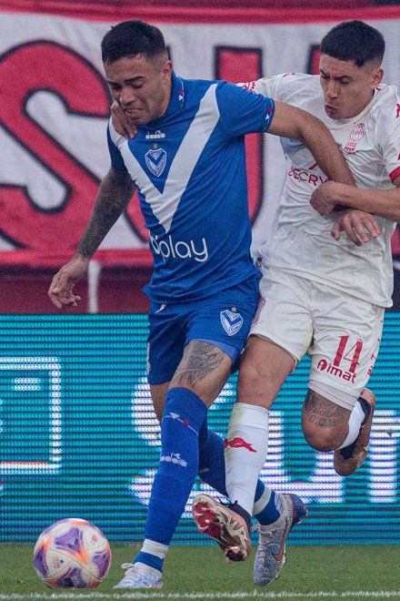
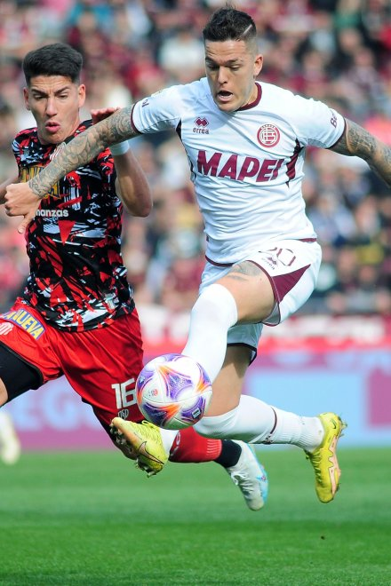
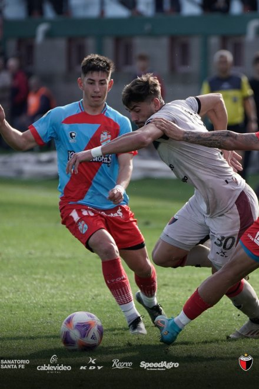

Aquí, la pasión y la historia del fútbol argentino cobran vida. A través de exposiciones virtuales, archivos históricos y eventos emocionantes, te invitamos a explorar los momentos más memorables y emblemáticos de nuestro deporte nacional. Desde los mundiales ganados hasta los ídolos inolvidables, descubre cómo el fútbol ha dejado una huella imborrable en la cultura argentina.
En el Museo AFA, nuestra misión es preservar y difundir el legado futbolístico de Argentina, trascendiendo fronteras y dejando una huella en la historia del deporte mundial. Ofrecemos una experiencia interactiva e inmersiva para los aficionados y curiosos interesados en la evolución del fútbol en nuestro país. Desde la épica conquista de la primera Copa Mundial en 1978 hasta la legendaria rivalidad entre Boca Juniors y River Plate, cada exposición ofrece un relato detallado con fotografías, videos y testimonios de jugadores.
Además, nuestra sección educativa ofrece material didáctico para docentes y recursos pedagógicos para estudiantes, promoviendo el uso del fútbol como herramienta de enseñanza. El Museo AFA es un lugar de encuentro para todos los amantes del fútbol y la cultura argentina. Descubre la emoción de los eventos, explora la tienda oficial y únete a esta pasión futbolera que nos une a todos los argentinos. ¡Bienvenidos al Museo de la AFA!

El logo de la Asociación del Fútbol Argentino (AFA) es un símbolo emblemático que refleja la pasión por el fútbol en Argentina, combinando tradición y modernidad. Representa la grandeza del fútbol argentino y la relevancia histórica de la AFA.